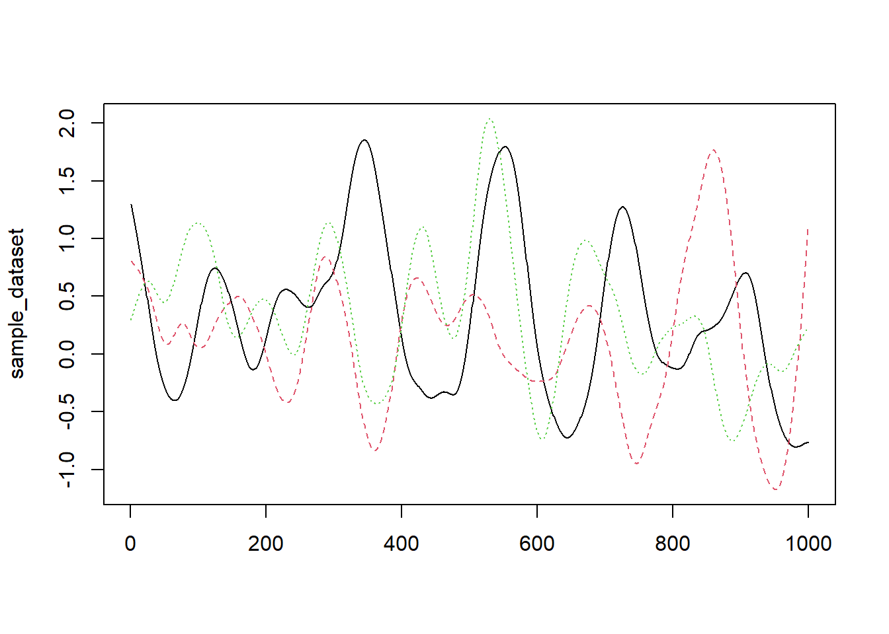
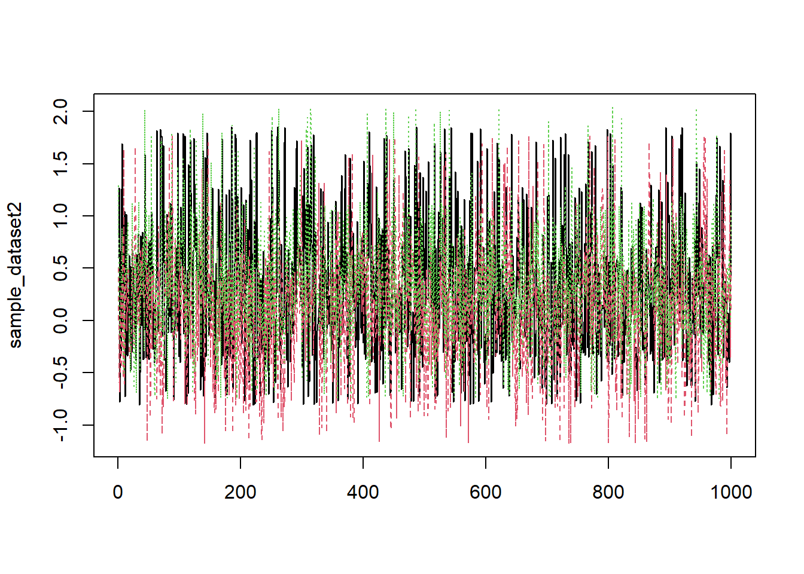

Load the required packages and data.
library(boot)
my_data <- load("..\\data\\5.R.RData")
sample_dataset <- Xy
Xy <- NULLTrain a simple linear model and print it’s summary to get the coefficient for X1
my_model <- lm(y~X1+X2, data=sample_dataset)
summary(my_model)$coefficients## Estimate Std. Error t value Pr(>|t|)
## (Intercept) 0.2658349 0.01988032 13.371758 1.249278e-37
## X1 0.1453263 0.02593295 5.603925 2.711026e-08
## X2 0.3133670 0.02922671 10.721938 1.843565e-25Plot the variables against each other - each line represents a column from the dataset.
matplot(sample_dataset,type="l")
This plot shows that there’s autocorrelation in the dataset - this means that the data is correlated with a lagged version of itself. For example, yesterday’s temperature might be a good predictor of today’s temperature. We can see this is the plot as smooth, up and down curves.
Lets look at the plot if we randomly re-order the rows.
new_index <- sample(1:1000, size = 1000, replace = FALSE)
sample_dataset2 <- sample_dataset[new_index,]
matplot(sample_dataset2,type="l")
We can use the acf function to test the correlation between a variable and lagged versions of itself.
acf(sample_dataset$X1, lag.max = 5, plot = FALSE)##
## Autocorrelations of series 'sample_dataset$X1', by lag
##
## 0 1 2 3 4 5
## 1.000 0.997 0.993 0.988 0.981 0.974acf(sample_dataset2$X1, lag.max = 5, plot = FALSE)##
## Autocorrelations of series 'sample_dataset2$X1', by lag
##
## 0 1 2 3 4 5
## 1.000 0.003 -0.014 0.025 -0.030 -0.052This very strong autocorrelation effectively reduces our sample size - we think we have 1000 points but each point is very similar to the points before and after it. The summary(my_model) estimates the SE with the assumption that we have 1000 iid data points, causing it to be overconfident and give too small an estimate for the error.
First we create a function which outputs the estimate for the coefficient of X1. The index argument enables the creation of a bootstrapped sample. The boot function feeds a vector into index which tells it which rows to use from the input dataset.
extract_coefficient <- function(input_data, index){
my_model <- lm(y~X1+X2, data=input_data[index,])
my_model$coefficients[2]
}Now we can apply this function to 100 bootstrapped samples
my_boot <- boot(sample_dataset, extract_coefficient, R=100)
my_boot##
## ORDINARY NONPARAMETRIC BOOTSTRAP
##
##
## Call:
## boot(data = sample_dataset, statistic = extract_coefficient,
## R = 100)
##
##
## Bootstrap Statistics :
## original bias std. error
## t1* 0.1453263 -0.007617779 0.02884282This boot strap gives a higher estimate of the standard error for X1’s coefficient than summary(my_model) did but it’s still making the assumption that the points are iid, causing it to underestimate the standard error.
Here we split data into 100 row chunks, then pick 10 chucks with replacement. This is typically done with time series data since each data point is correlated with the points before and after it (- if you were to select points at random then points would no longer be correlated with the points around them (i.e they’re not independent). We can implement this quite easily using the tsboot (time series bootstrap) function.
block_boot <- tsboot(tseries = sample_dataset, extract_coefficient, R=100,
l = 100, # This is the size of each block (100 consecutive data points)
sim = "fixed") # This means used blocks of a fixed length
block_boot##
## BLOCK BOOTSTRAP FOR TIME SERIES
##
## Fixed Block Length of 100
##
## Call:
## tsboot(tseries = sample_dataset, statistic = extract_coefficient,
## R = 100, l = 100, sim = "fixed")
##
##
## Bootstrap Statistics :
## original bias std. error
## t1* 0.1453263 0.005105024 0.2058791This gives us a new estimate for the standard error which is much larger than the SE given when selecting data points at random. Why is that?
Well the autocorrelation between the points has been preserved since we’re taking chunks of points (so the correlation between consecutive points is maintained).